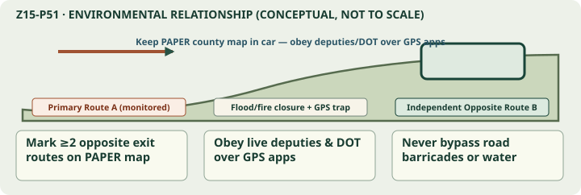

Z15-P51 · Disaster scenarios · New manuscript
Map two independent neighborhood exit routes and override unsafe GPS detours
Prevent gridlock traps and closed-road dead-ends by pre-planning multiple physical routes out of your block, town, and county.
When it applies · Wildfire, flood, hazmat, and winter evacuation planning for every driver and household.
Equipment · Printed paper county/state highway map kept in glovebox, highlighted primary + alternate exit corridors, and state DOT 511 radio/alerts.

Actions
- Highlight at least TWO completely independent exit routes leaving your neighborhood and town in opposite compass directions on a PAPER road map kept inside each vehicle—if a river bridge floods, a train derails, or a wildfire jumps the main highway, you immediately pivot to Route B without panic.[D14, T13]
- Drive both routes once in daylight during calm weather so every household driver recognizes intersections, low-lying flood bridges to avoid, and rural gravel dead-ends.[D14, D05]
- During an active disaster evacuation, FOLLOW LIVE LAW-ENFORCEMENT OFFICERS, FIRE CREWS, AND OFFICIAL DOT ROAD CLOSURES—NOT SMARTPHONE GPS SHORTCUTS, because crowdsourced traffic apps automatically divert drivers off congested main highways onto flooded side roads, downed-wire streets, or burning flanks.[D14]
Failure recognition · Letting a phone navigation app reroute an evacuating family off a slow county highway onto an unmonitored low-water creek bridge washed out by flash flooding.[D14, D05]
Verify · Confirm paper road map in every car with ≥2 opposite exit routes marked and every driver briefed to override GPS for live official closures.[D14]
Stop or change course · Any police barricade, downed wire, active smoke wall, or water across pavement halts forward travel immediately—turn back calmly to an open official corridor.[D14, D05]
Evidence and editorial notes
- D05 · FEMA / Ready.gov · Floods (current web edition)
- Section: Floods > Flash Flood Evacuation, Turn Around Don't Drown, and Re-Entry · Conditions: River flooding, urban flash flooding, dam/levee risk, and post-flood return
Support: Evacuate early when ordered, move to higher ground immediately on Flash Flood Warnings, never walk or drive through floodwater (6 inches knocks down adults; 12 inches carries most cars), and never enter flood-damaged homes until electrical, gas, and structural hazards are cleared.
Limitations: Floodwaters commonly contain raw sewage, fuel, submerged debris, and energized downed wiring. · Conflicting evidence: None; aligns with T07, T16, and N10.
Editorial note: Core flood evacuation, water-avoidance, and safe re-entry evidence. · Specialist reviewer: Emergency management and flood hydrology
Primary source · checked 2026-11-24 - D14 · FEMA / Ready.gov · Evacuation (current web edition)
- Section: Household Evacuation Logistics, Go-Bags, and Shelter Registration · Conditions: Mandatory or voluntary evacuations across multi-hazard disasters
Support: Pre-pack grab-and-go kits (medications, IDs, water, warm layers, chargers, pet gear), maintain at least two independent route options out of the neighborhood, notify out-of-area contacts upon departure, and register status through official shelter/Red Cross Safe & Well channels.
Limitations: GPS navigation apps can route evacuees onto flooded, smoke-blocked, or closed secondary roads; follow live law-enforcement and DOT closures. · Conflicting evidence: None; operationalizes T13 into household evacuation execution.
Editorial note: Core evacuation execution and accountability evidence in Z15. · Specialist reviewer: Emergency management and transportation safety
Primary source · checked 2026-11-24 - T13 · FEMA / Ready.gov · Evacuation (current web edition)
- Section: Evacuation > Before, During, and After Evacuation · Conditions: Developing wildfire, flood, storm, or infrastructure emergency
Support: Identify multiple exit routes ahead of time, keep essential go-bags and fuel ready, leave promptly when authorities order evacuation, and do not return until officials declare the area safe.
Limitations: Late departure can trap groups behind road closures, smoke, or rising water. · Conflicting evidence: None; pairs with NWS-FLOOD and READY-WILDFIRE.
Editorial note: Establishes clear leave-early decision thresholds for multi-hazard scenarios. · Specialist reviewer: Emergency management
Primary source · checked 2026-11-24
Source lineage · FEMA Ready.gov Evacuation; new manuscript · Classification · New manuscript.